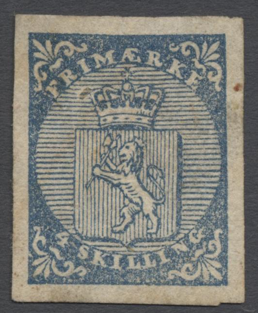
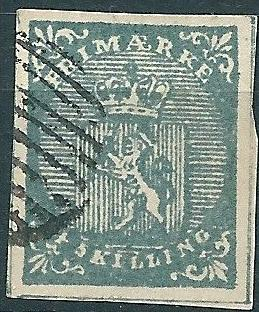
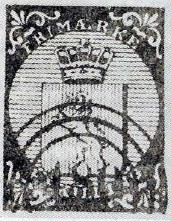
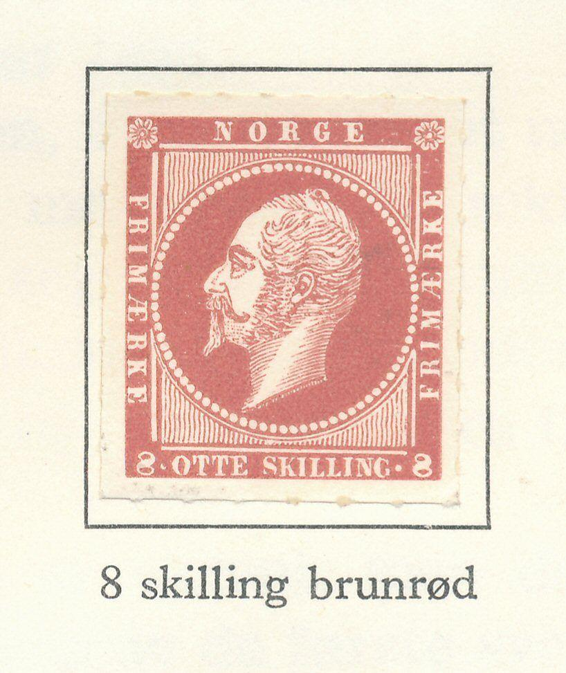
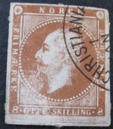
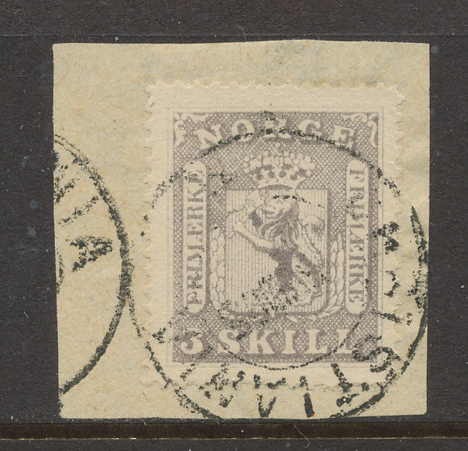
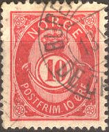
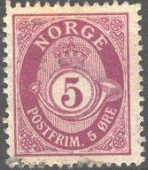
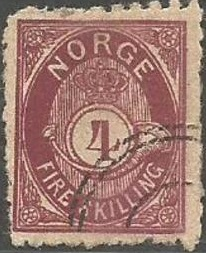

Norvège - Norwegen
Return To Catalogue - Norway 1878-1920 - Spitsbergen - Local issues overview (bypost) - Norway Posthorn issue
Note: on my website many of the
pictures can not be seen! They are of course present in the
catalogue;
contact me if you want to purchase it.
Bypost (local issues) existed in the towns of Aalesund, Arendal, Bergen, Christiansund, Drammen, Grimstad, Hammerfest, Holmestrand, Horten, Kragero, Levanger, Mandal, Namsos, Stenkjaer, Tromso, Trondheim, Tonsberg, Vadso and Vardo. Click here for more information about these local issues.
4 Skilling blue
This stamp has a watermark 'Lion with axe' (but is hard to distinghuish in most cases).
Value of the stamps |
|||
vc = very common c = common * = not so common ** = uncommon |
*** = very uncommon R = rare RR = very rare RRR = extremely rare |
||
| Value | Unused | Used | Remarks |
| 4 s | RRR | *** | |
Cancels:
(11 bars and 12 bars cancel)


(pen cancel 'pent blekkryss' and town cancel)
Aalesund '2' ringcancel
(numeral cancel, reduced size)
Cancels: from 1st of January 1855 (date of issue) to the beginning of 1856 (26th of January) bar cancels were used (usually 11 to 12 bars) in black (sometimes in blue). They are known as 'gridirons' (or 'riststempel'), 10 bar cancels also also known, but are rare. They were then replaced by numeral cancels consisting of three rings with a number varying from 1 to 383 in the center. For a list of towns see below. Usually the colour of these numeral cancels in black, but some blue cancels exist and number 123 is known to exist in red colour. Some of these numeral cancels are very rare (or even not known to exist). During the transition period from gridirons to numeral cancels, these stamps were cancelled with circular town cancels (datestamps). Pencancels also exist. Forged numeral cancels with numbers higher than 383 seem to exist (reference: http://www.firstissues.org/ficc/details/norway_1.shtml).
Some towns corresponding to the three-ring number cancels
('trering'), numbers ranging from 1 to 383:
2 Aalesund
7 Aasgaardstrand
14 Arendal
25 Bergen
31 Bodø
35 Brevig
41 Børsen
42 Christiana
44 Christiansund
48 Drammen
91 Grimmstad
95 Guldholmen i Tana
100 Hammerfest
123 Holmestrand
127 Horten
159 Kongsvinger
169 Langesund
172 Laurvig
207 Molde
216 Nordland
264 Skien
282 Stavanger
329 Vadso
Forgeries exist. There should be 39 horizontal lines in the circle and 24 vertical lines in the shield in the genuine stamps. Examples of forgeries (see also http://posthorn.scc-online.org/volume_36-2.pdf):

Forgery, probably the first one described in Album Weeds. The
crown on the head of the lion is too large, the lettering badly
done.

A second forgery described by Album Weeds is also quite badly done (sorry, no image available yet). It often has a non-existing '424' or '543' numeral cancel (genuine numeral cancels only go up to '383'). See also http://posthorn.scc-online.org/volume_15-2.pdf for more information. The thick line at the right hand side of the shield is not slanted as in the genuine, but squarish.

Third forgery, image obtained from Bill Claghorn's forgery site,
note the tail of the lion. The bottom part of the shield is also
too far from the circle when compared to a genuine stamp. This
forgery also exists with a bogus 'square with dots' cancel.
A modern forgery exists made by Peter Winter in the 1980's. I have only seen it cancelled with 4-ring cancel with a dot in the center. Uncancelled and tete-beche forgeries were also made by him:

Some modern (1914 onwards) reprints seem to exist, see: http://www.firstissues.org/ficc/details/norway_1.shtml.

1962 reprint for the book 'Det Norske Postverks', 4000 stamps
were printed. They are rouletted.
Another 'reprint' was made for the 'Salon der Philatelie' in Hamburg in 1984; it is printed on a minisheet with a wavy watermark.
1984 reprint
Another set of reprints of this issue and the following ones, 550
sets were printed (I don't know when or by whom).

Zoom-in of the above reprint sheet.
Literature:
'Norway Number One, The 4 Sk Lion of 1855' by V.Tuffs European
Philately 13; also includes information concerning forgeries,
reprints, postmarks, blocks and a plating guide.
'Norway Number One, The New Handbook' by Tore Gjelsvik (1994).


2 s yellow 3 s violet 4 s blue 8 s red
These stamps have perforation 13.
Value of the stamps |
|||
vc = very common c = common * = not so common ** = uncommon |
*** = very uncommon R = rare RR = very rare RRR = extremely rare |
||
| Value | Unused | Used | Remarks |
| 2 s | R | *** | |
| 3 s | *** | *** | |
| 4 s | *** | * | |
| 8 s | R | ** | |
"The Posthorn" Volume 15, no 4 (October 1958) shows a crude forgery of the 8 Sk stamp (see http://posthorn.scc-online.org/volume_15-4.pdf for an online version), in which the word 'FRIMAERKE' is written as 'FRIM AERKE' with much space between the 'M' and 'AE'. The value is written in 'SKILLIN' instead of 'SKILLING' (the 'G' is missing). I have never seen this forgery myself.
Other very primitive forgery.
Reprints possibly made in 1914 or 1924 with a different
perforation.
I've seen some imperforate (actually rouletted!) 1962 reprints of all 4 values, issued for the commemorative book 'Det Norske Postverks' (4000 stamps were issued).



1962 reprints
Numeral cancels or town cancels were used:
(Very clear 'BERGEN' cancel)

Forgery, or cut from a souvenir card?
1863 Value written once on the stamp


2 Skill yellow 3 Skill lilac 4 Skill blue 8 Skill red 24 Skill brown 1867 Value written twice on the stamp
1 Skill 1 black 2 Skill 2 orange 3 Skill 3 lilac 4 Skill 4 blue 8 Skill 8 red Surcharged


'14 ORE' on 2 Sk orange (1929) 'Kr. 1.00' (green) on 2 Sk orange (1905) 'Kr. 1.50' (blue) on 2 Sk orange (1905) 'Kr. 2.00' (red) on 2 Sk orange (1905)
These stamps have perforation 14 1/2 x 13 1/2.
Value of the stamps |
|||
vc = very common c = common * = not so common ** = uncommon |
*** = very uncommon R = rare RR = very rare RRR = extremely rare |
||
| Value | Unused | Used | Remarks |
| Value written once on the stamp | |||
| 2 s | R | *** | |
| 3 s | R | R | |
| 4 s | *** | * | |
| 8 s | *** | ** | |
| 24 s | *** | *** | |
| Value written twice on the stamp | |||
| 1 s | ** | ** | |
| 2 s | * | * | |
| 3 s | R | *** | |
| 4 s | *** | * | |
| 8 s | R | ** | |
| Surcharged | |||
| 14 o on 2 s | c | c | |
| 1 K on 2 s | * | ** | |
| 1.50 K on 2 s | *** | *** | |
| 2 k on 2 s | *** | *** | |
Forgery:
 


Image obtained from Kristian Wang. It is probably the forgery
described and shown in 'The Posthorn' Vol 28, No. 4 (1971), see
also http://posthorn.scc-online.org/volume_28-4.pdf. It is stated
there that the design is too clear, the outer framelines are too
thin and the letters of 'NORGE' are too thick. The upper
ornaments are also too thick. It is stated that a Belgian stamp
dealer 'J.G.' seems to have brought these forgeries in the market
in 1926. It even exists on pieces of a letter.
(I've been told that this is a forged 'Kr.2.00' overprint)

Cut from somekind of souvenir card?
I've seen some imperforate (actually rouletted) 1962 reprints of the "8 SKILL 8" value, issued for the commemorative book 'Det Norske Postverks' (4000 stamps were printed).

Rouletted 1962 reprint

Another reprint.
Value in 'SKILLING'
1 Skilling green 2 Skilling blue 3 Skilling red 4 Skilling lilac 6 Skilling brown 7 Skilling brown Surcharged
'15 Ore' on 4 Skilling lilac (1908) '30 Ore' on 7 Skilling brown (1906)
Value of the stamps |
|||
vc = very common c = common * = not so common ** = uncommon |
*** = very uncommon R = rare RR = very rare RRR = extremely rare |
||
| Value | Unused | Used | Remarks |
| 1 s | * | * | Several shades of green |
| 2 s | * | * | |
| 3 s | ** | c | |
| 4 s | * | * | Several shades of colour |
| 6 s | R | *** | |
| 7 s | ** | ** | |
| Surcharged | |||
| 15 o on 4 s | * | c | |
| 30 o on 7 s | * | * | |
1877 Posthorn, value in 'ORE', thin letters in 'NORGE' (letters with no serifs)



1 Ore grey 2 Ore brown 3 Ore orange 5 Ore blue 5 Ore green 10 Ore red 12 Ore green 12 Ore brown 20 Ore brown 20 Ore blue 25 Ore lilac 35 Ore green 50 Ore red 60 Ore blue Surcharged
'2 Ore' on 12 o brown (1888)
Specialists further distinguish in this thin letter print, stamps printed by P. Petersen, Chr. Johnsen or the State printer (Centraltrykeriet). They differ in size and in small details (such as the shading on the posthorn).
Value of the stamps |
|||
vc = very common c = common * = not so common ** = uncommon |
*** = very uncommon R = rare RR = very rare RRR = extremely rare |
||
| Value | Unused | Used | Remarks |
| 1 o | * | * | Shades of grey |
| 2 o | c | c | |
| 3 o | ** | * | |
| 5 o blue | ** | * | |
| 5 o green | ** | c | |
| 10 o | ** | c | |
| 12 o green | *** | * | |
| 12 o brown | *** | *** | |
| 20 o brown | *** | * | |
| 20 o blue | ** | c | |
| 25 o | ** | * | Shades of colour |
| 35 o | ** | * | |
| 50 o | ** | * | |
| 60 o | ** | * | |
| Surcharged | |||
| 2 o on 12 o | c | c | |
1894 Posthorn value in 'ORE', thick letters in 'NORGE' (antiqua, letters with serifs)



1 Ore grey 2 Ore brown 3 Ore orange 5 Ore green 5 Ore lilac (1922) 7 Ore green (1929) 10 Ore red 10 Ore green (1922) 12 Ore violet (1918) 15 Ore brown 15 Ore blue (1920) 20 Ore blue 20 Ore green (1921) 25 Ore lilac 25 Ore red (1922) 30 Ore grey 30 Ore blue (1927) 35 Ore green 35 Ore olive (1919) 40 Ore green (1917) 40 Ore blue (1922) 50 Ore brown 60 Ore blue Surcharged
'5 ore' on 25 ore lilac (1922)
Value of the stamps |
|||
vc = very common c = common * = not so common ** = uncommon |
*** = very uncommon R = rare RR = very rare RRR = extremely rare |
||
| Value | Unused | Used | Remarks |
| 1 o | vc | vc | |
| 2 o | c | vc | |
| 3 o | c | vc | |
| 5 o green | c | vc | |
| 5 o lilac | c | vc | |
| 7 o | c | vc | |
| 10 o red | c | vc | |
| 10 o green | * | vc | |
| 12 o | c | c | |
| 15 o brown | * | vc | |
| 15 o blue | c | vc | |
| 20 o blue | c | vc | |
| 20 o green | c | vc | |
| 25 o lilac | * | vc | |
| 25 o red | * | c | |
| 30 o grey | * | vc | |
| 30 o blue | c | c | |
| 35 o green | * | c | |
| 35 o olive | * | vc | |
| 40 o green | * | c | |
| 40 o blue | * | vc | |
| 50 o brown | * | vc | |
| 60 o blue | * | c | Shades of blue |
Surcharged |
|||
| 5 o on 25 o | c | c | |
This stamp type has the record for being the longest used (from 1872 upto now).
Postcards in the same desing exist, I have seen: 2 sk blue, 3 sk red, 3 o orange, 5 o blue, 6 o green, 6 o brown and 10 o red.
The various types of these stamps can be identified at: http://www.frimerkehuset.no/fh/posthorn/posthorn.htm.
For more information about this posthorn issue, click here.

For stamps of Norway issued from 1878 to 1920 click here.
Antikva skrift = antiqua script (used for the
posthorn design, meaning "NORGE" written with serifs)
Auksjon = auction
Bakgrunnen = background
Brev = letter
Ensfarget = one colour
Frimerker = stamps
Norge = Norway
Postfrisk = uncancelled
Postkort = postcard
Riststempel (or Ristestempel?) = bar cancel
Samling = collection
Stempel = cancel
Stemplet = cancelled
Vannmerke = watermark
Stamps - Timbres-Poste - Briefmarken - Frimerker


{kind=link}
{kind=link}
{kind=link}
{kind=link}
{kind=link}
{kind=link}
{kind=link}
{kind=link}